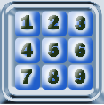

Bouton "Basculer"
Bouton "Basculer"
En appuyant sur ce bouton, on fait basculer l'etat de saisie d'une case en mode valeur exacte ou candidat. La case apparait en blue pour la valeur exacte, ou en jaune pour le candidat

Le paneau de controlole permet de piloter la saisie des grilles, et de lancer la resolution des grilles.

permet de saisir les chiffres dans la grille. Selon l'etat du bouton "basculer", vous pouver soit saisir la valeur d'une case ou un candidat.
En appuyant sur ce bouton, on fait basculer l'etat de saisie d'une case en mode valeur exacte ou candidat. La case apparait en blue pour la valeur exacte, ou en jaune pour le candidat
Efface le contenu de la case en surbrillance. Selon l'etat de la case (couleur blue ou jaune), la valeur exacte est effacer ou tous les candidats sont effacés
Affiche le temps mis pour résoudre une grille donnée. La valeur affiché est celle de la derniere grille résolue. Le temps s'affiche en secondes. Par exemple 0:012:145 S est en fait 0,012145 S. Le format permet de distinguer facilement les differentes unités seconde-milliseconde-microseconde.
Lance la résolution de la grille.